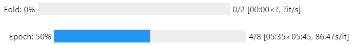

Training the autoencoder#
In this example, a simple autoencoder architecture is trained using the fileBatch method.
Note
The following example was designed for Jupyter notebooks. If the fileBatch class is used in a Python file, some elements may not render properly.
File structure#
This tutorial can be followed by directly copying and pasting the code into a code editor. To make sure the code runs without errors it is recommended to follow the file structure since the fileBatch method will search for a dataset folder (Datasets) and save files inside a folder (Autoencoder Log). The code is executed in train.ipynb.
The structure is the following :
├── Datasets
│ ├── dataset1.bin
│ ├── dataset2.bin
│ ├── ...
│ └── datasetN.bin
├── Autoencoder Log
├── AutoencoderAPI
├── train.ipynb
Import fileBatch#
Only two objects are needed to train the model.
from AutoencoderAPI.fileBatch import fileBatch
from AutoencoderAPI.utils.plot import load_run_results
Configuration dictionary#
The API offers a variety of training schemes that rely on configuration dictionaries that define the training parameters.
The dictionaries are separated into 3 categories :
files:#
- dataset(str)
Folder location of the dataset used to train the neural network.
- path_save(str)
Path to the location where the log files are stored.
- input_dimension(int)
Dimension of the signals. This is the number of voltage values expected in each signal in the dataset.
network:#
- network_type(str)
Neural network architecture.
- activation_list(list)
Activation functions that are used in the neural network. The architecture will follow the list from left to right.
- layer_list(list)
Size of each linear layer in the network
train:#
- optimizer(str)
Optimization protocol (see Pytorch documentation for more details)
- criterion(str)
Loss function used to optimize the autoencoder’s weights and biases.
- k-fold(int)
Number of k-fold cross-validation.
- batch_number(int)
Number of batches. This value is used to divide the number of dataset files. By increasing batch_number, fewer files are opened at one time, this can be useful for large datasets. However, a value different than 1 is not recommended since it removes the true randomness of the training process (true random batching is still a feature to develop).
- epochs(int)
Number of epochs (number of times the network will be trained on the training set).
- skip_elements(int)
Reduce the size of each signal in the dataset by taking one value for every skip_elements-th element.
- learning_rate(float)
Learning rate used in the optimizer object.
Warning
By increasing batch_number, fewer files are opened at one time, this can be useful to reduce the memory usage for large datasets. However, a value different than 1 is not recommended since it removes the true randomness of the training process (true random batching is still a feature to develop).
config = {
'files' : {
'dataset' : "Datasets/NIST (8192)",
'path_save' : 'Autoencoder Log/',
'input_dimension' : 8192
},
'network' : {
'network_type' : 'generic',
'activation_list' : ['PReLU', 'GELU', 'PReLU', 'GELU', 'PReLU'],
'layer_list' : [200, 100, 50, 1, 50, 100, 200],
},
'train' : {
'optimizer' : 'Adam',
'criterion' : 'MSELoss',
'k-fold' : 2,
'batch_number' : 1,
'epochs' : 8,
'skip_elements' : 0,
'learning_rate' : 1e-5
}
}
Train network#
with the configuration dictionary, it is possible to directly execute the training process using the fileBatch method.
fb = fileBatch()
fb.run(config)
A progress bar should render the k-fold and epochs steps.
{kind=link}
When the model is trained a run folder will be created inside the folder specified in the configuration dictionary (save_folder). The folder is identified using the date and time.
Analyse Results#
The load_run_results function can be used to visualize the performance of the trained network.
load_run_results("Autoencoder Log/run-2023-09-23-09-42")
{kind=link}